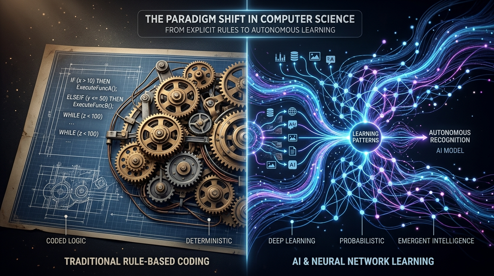
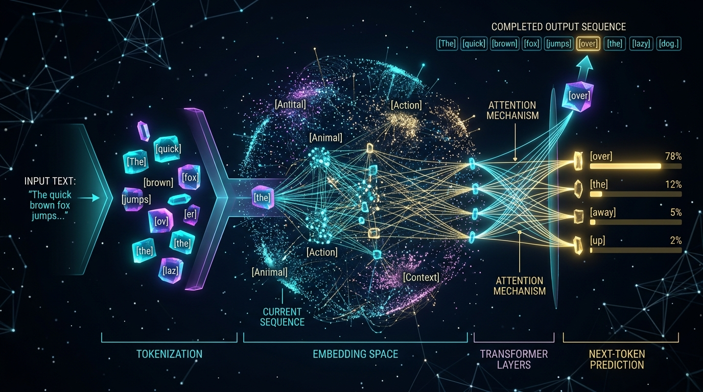
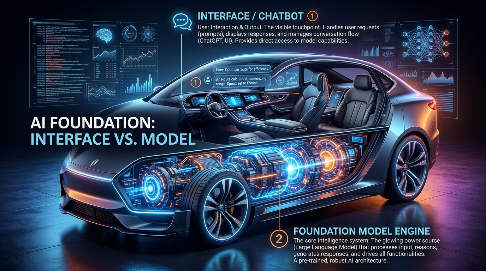
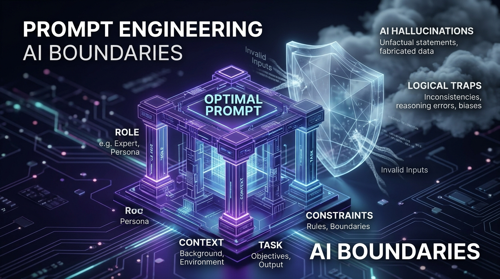

Módulo 1: Entender la IA, LLMs, Prompting y Asistentes
Descubre qué hay realmente dentro del motor de la Inteligencia Artificial moderna. Pasa de concebirla como magia a comprender su funcionamiento mecánico: de reglas lógicas a probabilidades estadísticas, anatomía de tokens y parámetros, control de temperatura, desacoplamiento entre interfaces y modelos, y diseño de asistentes personalizados.

🧭 Cómo sacar el máximo provecho a este material interactivo
Esta guía no te entrega respuestas memorísticas masticadas. Te proporciona conceptos nucleares, simuladores interactivos de parámetros, laboratorios de tokens y misiones de experimentación. Abre tu chat de IA favorito en paralelo y ve resolviendo cada misión práctica. Tu avance se guarda automáticamente.
El Cambio de Paradigma: De Reglas a Datos
De programar condiciones explícitas (if-else) a entrenar modelos con ejemplos masivos.

Durante 70 años, la computación operó bajo una fórmula rígida: Reglas + Datos = Respuestas. Si querías detectar spam o reconocer un rostro, debías escribir millones de líneas de condiciones lógicas que colapsaban ante cualquier variación del mundo real.
El Machine Learning invierte esta ecuación: Datos + Respuestas Esperadas = Reglas (Modelo). El sistema analiza millones de ejemplos y ajusta conexiones internas hasta inferir sus propias funciones estadísticas, capaces de generalizar frente a datos nunca antes vistos.
❌ Límite estructural: El programador humano es el cuello de botella. No podemos escribir reglas para patrones que nosotros mismos reconocemos por intuición visual o lingüística.
✅ Poder de generalización: La máquina aprende representaciones latentes de alta dimensión y se adapta a variaciones imprevistas.
Misión 1: La analogía cotidiana del aprendizaje
Abre tu chat de IA y pídele que te explique con una analogía del mundo real la diferencia entre un sistema de reglas explícitas y una red neuronal. Comprueba si utiliza el ejemplo de aprender a andar en bicicleta leyendo un manual vs. cayéndose y ajustando el equilibrio muscular con la práctica.
"Explícame con una analogía sencilla por qué la visión por computadora fracasó con programación tradicional y triunfó con redes neuronales convolucionales y transformers."
Anatomía de un LLM: Tokens, Parámetros y Temperatura
Qué ocurre en las entrañas de modelos como GPT-4o, Gemini y Claude.

Un Large Language Model (LLM) no almacena "ideas" como un cerebro humano ni "busca en una enciclopedia interna". En su núcleo más íntimo, es una función matemática de distribución de probabilidad: dada una secuencia de palabras previas, calcula cuál es el siguiente fragmento de texto (token) más verosímil.
Token
Toca para voltearUnidad mínima de procesamiento de un LLM. Puede ser una palabra completa, una sílaba o un signo de puntuación. En español, 1,000 tokens equivalen aproximadamente a 750 palabras.
Parámetros
Toca para voltearValores numéricos internos (pesos sinápticos) calibrados durante el entrenamiento. Un modelo de 7B tiene 7 mil millones de parámetros; uno de 70B almacena patrones más densos pero requiere más memoria RAM.
Ventana de Contexto
Toca para voltearCantidad máxima de tokens (entrada + salida) que el modelo puede retener en memoria activa simultáneamente (ej. 128k en GPT-4o, 2 millones en Gemini 1.5 Pro). Todo lo que exceda esa ventana se olvida.
Alucinación
Toca para voltearFenómeno en el que el modelo genera datos falsos o inexistentes con absoluta elocuencia y seguridad, porque está optimizado para maximizar la fluidez probabilística, no la verdad fáctica.
Misión 2: ¿Predicción o razonamiento genuino?
Existe un debate abierto en las ciencias computacionales: ¿los LLMs son meros "loros estocásticos" que repiten patrones estadísticos o desarrollan modelos internos del mundo que constituyen una forma emergente de razonamiento?
Interfaz vs. Modelo: No Confundas la App con el Cerebro
El mismo motor de IA genera respuestas radicalmente distintas según la capa de producto que lo envuelve.

Muchos profesionales afirman: "ChatGPT es tonto para mi empresa" o "Copilot no sabe programar". En realidad, están juzgando la interfaz de usuario (con sus políticas de moderación, límites de memoria y prompts de sistema ocultos), no la capacidad pura del modelo base.
Misión 3: El mismo modelo, respuestas opuestas
Investiga por qué formularle la misma pregunta a GPT-4 a través de la interfaz web de ChatGPT produce un tono conversacional y largo, mientras que la misma consulta vía API con un System Prompt estricto devuelve una respuesta de 5 palabras en formato JSON puro.
Asistentes Personalizados y Técnicas de Aumento (RAG)
Configurar conocimiento e instrucciones especializadas sin reentrenar el modelo.
Crear un "GPT personalizado" o asistente corporativo no significa gastar millones de dólares reentrenando una red neuronal desde cero. Consiste en envolver el modelo base con tres componentes complementarios:
- Instrucciones Persistentes (System Prompt): Reglas fijas de rol, formato y restricciones.
- Conocimiento Adicional (RAG): Búsqueda semántica en PDFs o manuales que se inyectan en la ventana de contexto.
- Herramientas (Tools / Function Calling): Habilidad de consultar APIs, ejecutar código o buscar en internet.
Misión 4: ¿Cómo funciona un índice vectorial en RAG?
Investiga qué es un embedding (representación numérica del significado de una frase) y cómo una base de datos vectorial permite encontrar párrafos relevantes por similitud semántica en lugar de coincidencia exacta de palabras clave.
Fronteras del Prompt y Prevención de Alucinaciones
Comprender los límites reales de la tecnología para evitar falsas expectativas y riesgos legales.

Un prompt cuidadosamente diseñado puede modular el tono, estructurar el formato, asumir roles profesionales y filtrar ruido, pero NO PUEDE:
- Garantizar verdad factual al 100% (la alucinación es inherente a la naturaleza probabilística del modelo).
- Acceder a eventos del mundo real posteriores a su fecha de corte de conocimiento (a menos que use búsqueda web).
- Garantizar razonamiento aritmético o criptográfico complejo sin invocar un intérprete de código externo.
Misión 5: Provoca y diagnostica una alucinación
Formula una pregunta sobre un hecho ficticio o una combinación improbable de eventos reales. Por ejemplo: "Explícame las conclusiones del Tratado de Paz de Lisboa de 1984 entre Noruega y Suiza." Observa cómo el modelo, si no tiene herramientas de búsqueda activas, genera una explicación histórica impecablemente redactada, con nombres de diplomáticos verosímiles pero 100% inventada.
"¿Por qué pedirle a una IA 'sé completamente verídico y no inventes nada' no es suficiente para evitar una alucinación?"
Glosario Técnico de Fundamentos
Toca o haz clic sobre cada tarjeta para girarla y repasar los términos.
LLM
Toca para voltearLarge Language Model: red neuronal profunda (arquitectura Transformer) entrenada con cientos de miles de millones de palabras para predecir secuencias de texto.
Prompt
Toca para voltearInstrucción de entrada o estímulo contextual que recibe el modelo para condicionar y guiar la predicción de su respuesta final.
Fine-Tuning
Toca para voltearProceso de reentrenar ligeramente los pesos de un modelo ya entrenado utilizando un dataset especializado para alterar su estilo o dominio.
RAG
Toca para voltearRetrieval-Augmented Generation: arquitectura que busca fragmentos en una base de documentos y los inyecta en el prompt antes de generar la respuesta.
API
Toca para voltearApplication Programming Interface: canal programático que permite a un software comunicarse directamente con el modelo sin pasar por una UI web.
System Prompt
Toca para voltearDirectriz base y oculta que define la personalidad, límites, restricciones y rol que el modelo debe respetar en toda la interacción.
Autoevaluación Práctica
Evalúa tu criterio técnico antes de avanzar al Módulo 2.
1. ¿Cuál es la diferencia fundamental entre la programación tradicional y el Machine Learning?
2. Si deseas que un modelo genere respuestas deterministas y exactas para extraer datos en formato JSON, ¿qué temperatura debes configurar?
3. Un colega dice: "GPT-4 no sirve para nuestra empresa porque ChatGPT web no conoce nuestro catálogo interno de productos". ¿Cuál es el error técnico en su afirmación?
4. ¿Por qué un prompt perfecto no puede eliminar por completo el riesgo de alucinación?
Checklist de Dominio Profesional
Marca únicamente los hitos que puedas explicar o resolver sin consultar la guía.
Recursos Oficiales para Profundizar
Fuentes seleccionadas de la industria para seguir explorando.
OpenAI Tokenizer Oficial
Herramienta visual para experimentar con el tokenizador byte-pair encoding (cl100k_base y o200k_base).
platform.openai.com →Paper "Attention Is All You Need"
El artículo fundacional de Google Brain (2017) que introdujo la arquitectura Transformer en el mundo.
arxiv.org →Guía de Prompt Engineering
Compendio exhaustivo de técnicas de Few-Shot, Chain-of-Thought, ReAct y calibración de respuestas.
promptingguide.ai →Google Cloud Vertex AI
Documentación técnica de acceso por API, parámetros de temperatura y grounding con Google Search.
cloud.google.com →